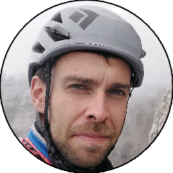
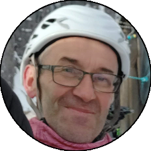
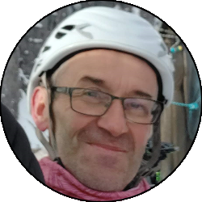

Relazione
| Data Uscita | 07-01-2023, Sabato | Area | Alpi e Prealpi Bergamasche / Alpi Orobie / Gruppo del Legnone |
|---|---|---|---|
| Luogo di Partenza | Olgiasca - Colico (LC) | Quota |
340m la partenza 340m la falesia |
| Dislivello | 50m (saliscendi) | Tempi | 30' tra avvicinamento e ritorno |
| Esposizione | Est | Difficoltà Tecnica | dal 3b al 6a+ |
| Punti di Appoggio | Nessuno | Acqua | No |
| Partecipanti |
 Dello,
 Papa -
 Henry, Papa -
 Henry,
 Matteito - Matteito -
 Oracolo, Oracolo,
 Walterino Walterino
|
||
(clicca sull'immagine per scarica la traccia GPS)
Accesso
Da Lecco dirigersi verso Sondrio e poco prima di Colico uscire all'uscita di Piona. Giunti sul lungolago, prendere a sinistra e costeggiare la bellisssima baia di Piona fino alla deviazione per Olgiasca (e l'Abbazia di Piona). Seguire la strada (molto stretta, attenzione a eventuali incroci) lasciando a sinistra la strada per l'Abbazia e portarsi dopo una serie di tornante a uno spiazzo prativo dove la strada finisce. Parcheggiare qui (pochi posti macchina) o al limite sulla strada che sale, badando di non essere di intralcio.
Avvicinamento
Dallo spiazzo portarsi verso Est passando tra alcune case fino al bosco, e si segue il sentiero abbastanza sul filo di cresta fino a un punto dove la vista si apre sul lago e sono evidenti le placconate della falesia. Scendere per sentiero ripido in breve al settore dove si desidera scalare.Descrizione Falesia
La maggior parte dei tiri è chiodata in maniera ottima, prestare attenzione su certi tiri (soprattutto quelli a vecchi resinati) perchè in alcuni casi (dove è facile) la distanza aumenta, necessario scalare con sicurezza o al limite integrare con qualche friend-medio piccolo (non indispensabile). Se si fanno certi tiri (soprattutto quelli alti) e non si hanno delle mezze corde con cui calarsi in doppia è necessario spezzare la calata alle soste intermedie. Consigliata corda da 70-80m se si avesse una singola. Presso alcune soste comode ci sono dei detriti, fare attenzione a non farli cadere verso la base della falesia.
Per informazioni sui tiri presenti e altro consultare Larioclimb